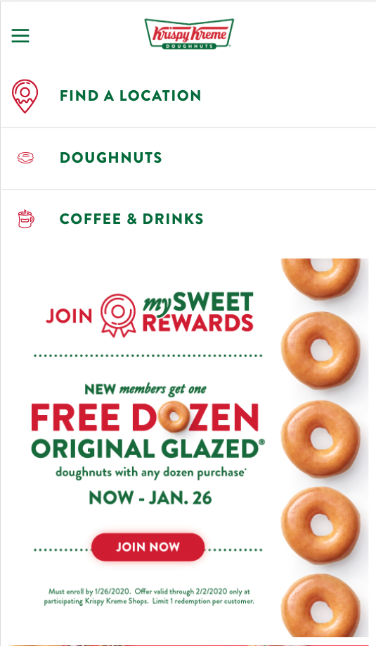
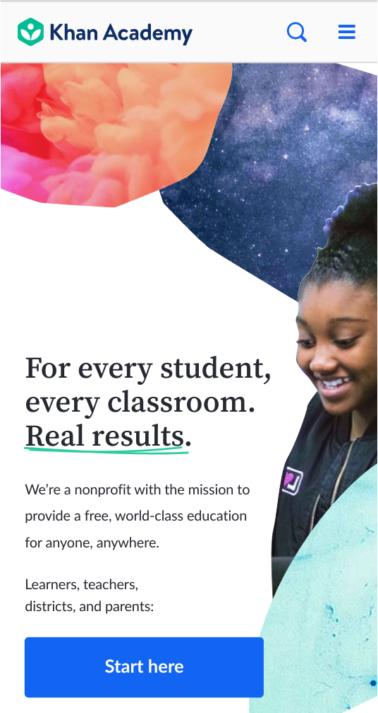
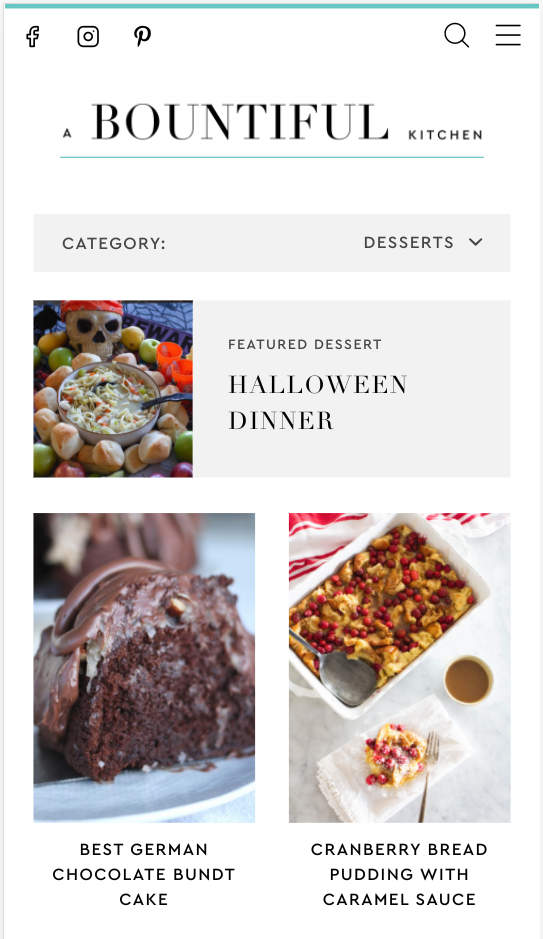

Contrast
Krispy Kreme
Krispy Kreme's Website The Krispy Kreme website exhibits contrast in their color scheme. Red and green are opposites on the color wheel, making them contrasting colors this contrast is used throughout the webpage.
Repetition
Khan Academy
Khan Academy's Website Khan Academy shows repetition in their color choices. The blue-green color used in the logo is repeated in the underline of the text, and the dark blue used for the search and menu is repeated in the start here button.
White Space and Clean Design
A Bountiful Kitchen
A Bountiful Kitchen's Website A bountiful Kitchen's website is a good example of using white space properly. There is adequate use of white space around the words and pictures to make the overall design clear and aesthetically pleasing.